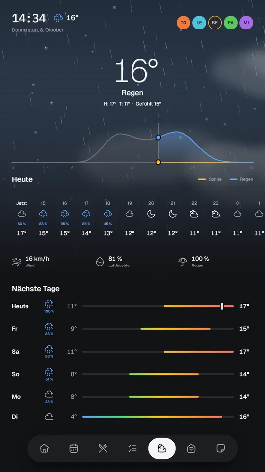
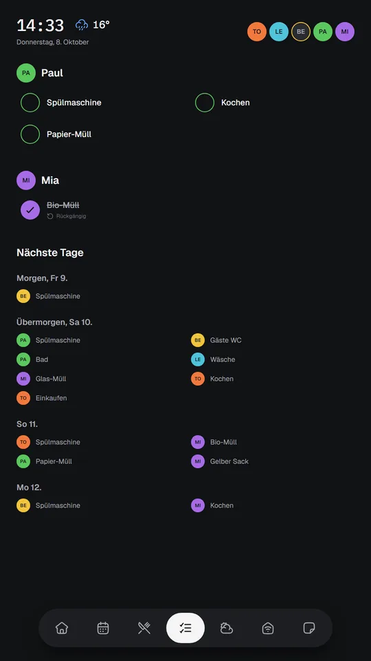
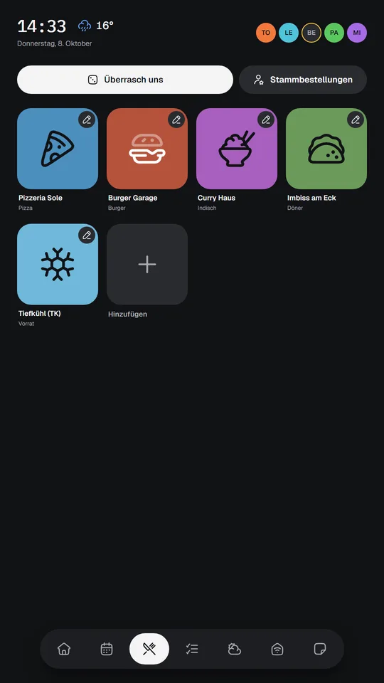
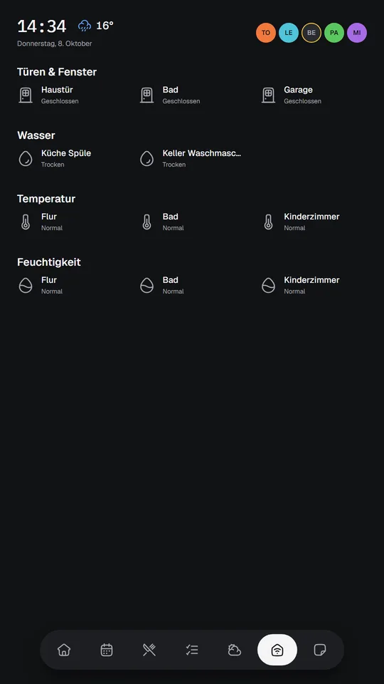
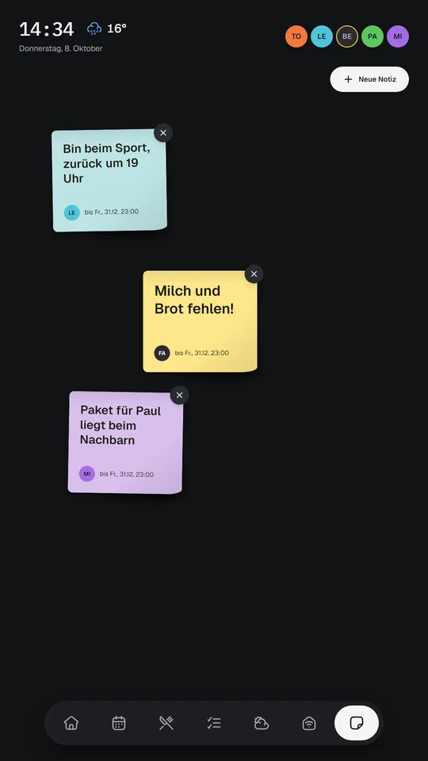

← All projects · Deutsche Version dieser Anleitung
A Calm Wall Dashboard for Your Family: Raspberry Pi Home Information Screen
Build it with an AI coding agent. No code to download, just a blueprint and the prompts.
Not every model can do the same. Read which AI model and agent to use before you start.







Screens of the finished dashboard. All names, appointments and notes are invented demo data; the UI is German because the household is.
Intro
Our family's plans lived in five apps and nobody opened any of them at the right moment. So I hung a screen in the hallway. It shows the shared calendar, the weather, who is home, whose turn it is to do the dishes, whether anything is leaking in the basement, and a board of sticky notes ("back around 7"). It wakes when someone walks past and goes dark when nobody is around.
I built it in about three weeks with AI coding agents. This Instructable does not hand you my code. Your calendar server, router and household are different from mine, so it hands you what transfers better: the architecture, the design rules, the wiring, the mistakes I made, and the prompts I used to build each piece.
Time: a few evenings of hardware, plus agent sessions for the software. Skill level: comfortable with a terminal and Docker. The agent writes the code. Cost: roughly the price of a Pi 4, a touchscreen and a PIR sensor, plus a server you probably already own.
Supplies
- 14" or larger Full HD touchscreen with USB touch, mounted portrait
- Raspberry Pi 4B (4 GB) with Raspberry Pi OS Trixie (64-bit)
- PIR motion sensor (HC-SR501 or similar), three female-to-female jumper wires
- An always-on machine with Docker: a NAS, a mini PC or an old laptop
- HDMI and USB cables, 20 to 30 cm
- Optional: a 3D printer (ASA filament), magnets, a thin steel plate and VHB tape for the mount
- Optional: a UniFi gateway (presence and leak sensors) and a CalDAV server
- An AI coding agent of your choice
Step 1: Understand the one big decision
The Pi displays; the server computes.
The Pi only runs a full-screen browser and reads the motion sensor. Everything that polls calendars, caches weather, stores notes and checks who is home lives in one small container on your server. That way you can reflash the Pi without losing anything, and the Pi is never short of memory next to a browser.
Consequences to plan for: the screen talks to the server across your LAN, so a shared API key is the only gate, and if the two machines sit on different network segments you need firewall rules for both the API and webhook ports.
Step 2: Decide what the screen is for
Seven screens, navigated by a floating icon-only tab bar:
- Idle: a huge clock, weather in one line, who is home.
- Calendar: next seven days, a big "next up", read-only.
- Food: restaurant tiles, a random pick, per-person usual orders.
- Chores: today's chores per person with round checkboxes.
- Weather: animated sky, hourly strip, rain versus sunshine chart.
- Sensors: doors, windows, leaks, temperature, humidity.
- Notes: draggable sticky notes with an on-screen keyboard.
The default screen follows the clock: calendar in the morning, weather at lunch, food in the evening, idle at night. A tap overrides until the screen sleeps.
Step 3: Mount and wire the hardware
Mount the screen portrait (rotated 90° left). Hang the Pi in its normal case upside down under a shelf, held by magnets so the SD card is one pull away.
Wire the PIR to the 40-pin header:
| PIR | Pi |
|---|---|
| VCC | Pin 2 (5 V) |
| GND | Pin 6 |
| OUT | Pin 12 (GPIO18) |
Tips: turn the sensor's hold-time trimmer to minimum and handle the "five minutes of no motion" logic in software. Let it warm up for a minute after power-on. Never cover the dome with plastic, and keep it away from the Pi's hot chip.
Check your power. A Pi 4 wants 5 V at 3 A. Powering it from the monitor's USB port often boots fine and then browns out under load. If you see the under-voltage warning, use a proper USB-C supply.
Step 4: Fix rotation and touch (Wayland, not X11)
Current Raspberry Pi OS uses the labwc Wayland compositor, so the usual xrandr
and xinput advice fails. Set the screen orientation to 270 in the desktop's
Screens panel, then map touch in ~/.config/labwc/rc.xml:
<touch deviceName="your touch controller's full device name"
mapToOutput="HDMI-A-1" mouseEmulation="no"/>
Two traps:
mouseEmulationmust be"no", or finger scrolling breaks everywhere.- The device name includes the USB port path, so moving the cable changes it and touch silently stops.
Step 5: Set the rules before the agent writes a line
Create a short project brief (CLAUDE.md) with the settled decisions: the
architecture, the stack (Go on the server, Svelte on the screen, YAML files
instead of a database, polling instead of WebSockets), the TLS rule (never skip
verification) and the design rules. The blueprint repo has a ready-to-fill one.
A one-page brief that the agent reads every session beats a long wiki it ignores. Also start a decision log now, with dated entries for what you decided and every failure. It becomes the most valuable file in the project.
Step 6: Build the backend with your agent
Give the agent prompt 01: a Go server using only the standard library, a shared API key generated on first boot, one YAML file per store, and one reusable pattern for every integration: a cache, a stale-on-error fallback, and a fixture as the last resort. That pattern is why the screen is never blank and never shows a raw error.
Verify on the real machine before moving on.
Step 7: Add the integrations one at a time
Prompt 02 covers calendar (let the server expand recurring events), weather (Open-Meteo needs no key), presence, webhooks and sensors. Things that saved me hours:
- Phone presence from the router's connected-client list beats pinging, because a sleeping phone radio ignores pings.
- Alarm systems send threshold events, not readings. Design the sensor screen for "too warm", not for 23.4 °C.
- Water leaks never clear on their own. Latch them and put the dismiss button on the kiosk itself.
- Do not skip TLS verification. Make a tiny private certificate authority and trust that one root.
Step 8: Build the screen
Prompt 03 builds the UI to a design system I called Ruhe (calm): no cards, no borders, no translucent tints, everything round, color only for state, person or restaurant, one palette file, big type. The panel hangs there 16 hours a day and must read in two seconds from four steps away.
Two details I like: sticky notes are tilted a few degrees derived from their ID, so the board looks hand-placed without jittering on every render, and the weather chart plots rain probability against real sunshine duration.
Step 9: Let it sleep
Prompt 04 builds a small motion daemon: no motion for five minutes and it blanks
the backlight; motion or a touch wakes it. Sleep and wake run locally, so they
work even if the network is down. The blueprint repo includes my working version
(about 200 lines of Go, plus its systemd unit and config file) under
reference/pi/, so your agent has the exact behavior to aim for.
Use wlopm to blank the panel. Do not use wlr-randr --off, which crashes the
browser. Set the browser service to Restart=always, and patch the browser's
saved exit state at startup so a hard power cut does not greet you with a
"restore pages?" prompt.
Step 10: Ship it
Prompt 05: one multi-stage Docker image with a distroless runtime, built on your dev machine, pushed to a registry, pulled on the server. Add a version field to the health endpoint on day one. When a "redeploy did nothing" session ate an evening, that field is what exposed a stale image tag.
Remember the screen runs the page it loaded at boot. After a frontend change, restart the kiosk service.
Step 11: Add the admin site
Prompt 06 adds a laptop-friendly page for schedule, calendar credentials, presence devices, people and sensors, so nobody has to SSH in to change a colour or an IP.
Troubleshooting
The blueprint's lessons-learned page lists every failure I hit, with its symptom, for example the webhook that times out silently (a firewall drop), the container that cannot open a raw ICMP socket, and the NAS that auto-blocked itself.
What is not finished
Per-person authentication at the screen (I designed an NFC fob tap), editing chores from the UI, a secrets manager, and tests. Better to say so than to let you trust something that does not exist.
Get the blueprint
Architecture, design system, hardware notes, lessons learned, all prompts and reference files on GitHub.
Open on GitHub